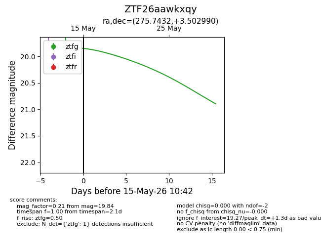
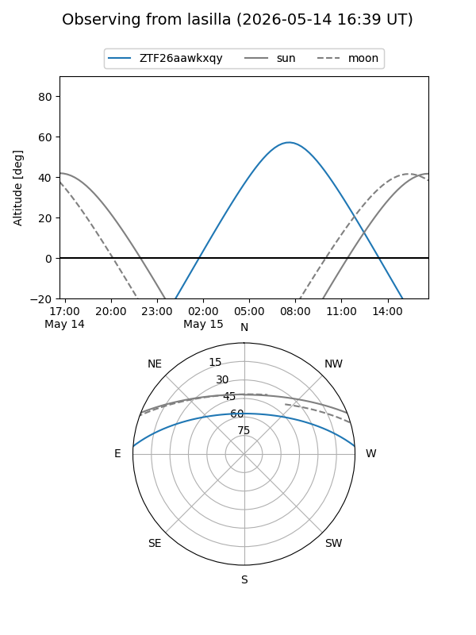
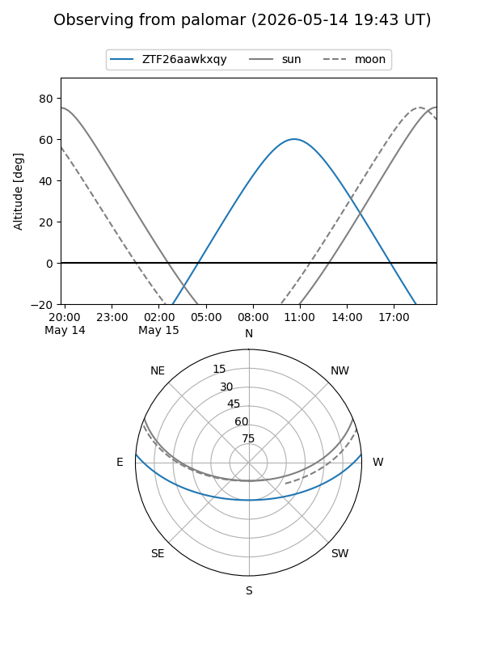
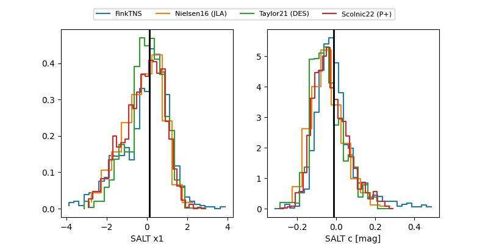

ZTF26aawkxqy
Target ZTF26aawkxqy at 2026-05-15 10:45
Aliases and brokers:
FINK: link
Lasair: link
ALeRCE: link
alt names
ZTF26aawkxqy (ztf,fink_ztf)
Coordinates:
equatorial (ra, dec) = 275.7432,+3.50299
equatorial (HMS+DMS) = 18:22:58.37,+03:30:10.77
galactic (l, b) = (32.8160,+7.92688)
Flags:
Photometry:
last ztfg=19.84
1 ztfg detections
Lightcurve

Visibility


Additional plots
